Which emails truly stood out this year?
The RGE Email Awards are back, hosted by Really Good Emails and Beefree. In this 2025 edition, we celebrate the emails that captured the most attention, sparked meaningful conversations, and raised the bar for how emails are designed and built today. From welcome series and testimonials to dark mode, retention, and B2B, this year’s awards reflect the patterns and practices shaping modern email—captured across the winning emails collection—alongside emerging trends in subject lines, CTAs, and data-driven storytelling.
Matt Helbig: Email geeks, how’s it going? Are we ready to get this party started? All right. Welcome to the Really Good Emails Awards for 2025. We had so much fun last year that we wanted to run it again. We just had a lot of fun with this one. We like to look at the emails people have sent throughout the year. It’s a great way to reflect on everyone’s hard work and celebrate some email submissions that really stood out to us. So let’s get into it.
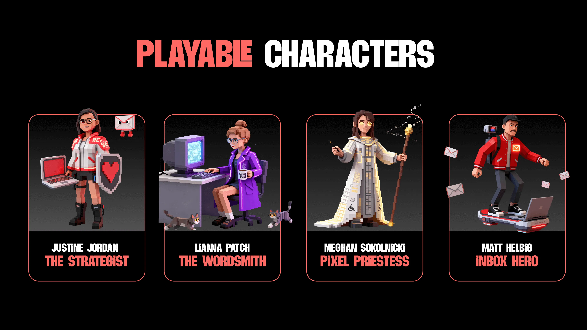
We’re joined by some awesome characters. We branched out this year to include some guest judges as well. Justine, why don’t you start with a quick introduction?
Justine Jordan: Sure. Hi, I’m Justine, and I only wish I were as cool and badass as my avatar makes me look. I wish I had a heart-covered shield in real life. I’m the Head of Strategy and Community here at Beefree and Really Good Emails. I’ve been doing this email thing for about 20 years now, so I’m coming in hot with some opinions—and maybe a little jealousy over Lianna’s cats in her avatar.
Lianna Patch: My avatar is perfectly accurate, except for the purple trench coat, which is currently in my closet. I’m Lianna Patch. I’m a conversion copywriter. I write a lot of emails. I have a lot of opinions about emails that my fellow judges often help me realize are unfounded, because I don’t always know what I’m talking about outside of words. But I’m going to do my best, like we all are. And now that you trust me so much, I’ll pass it to Meghan.
Meghan Sokolnicki: Hello. That is what I look like—this is a filter today. That is the actual me. I’m Meghan Sokolnicki. I’m an email designer. I’ve been in the industry for a little over a decade, specializing in email design for Emma and Campaign Monitor.
Matt Helbig: Awesome. I’m Matt Helbig. I lead all the email submissions at Really Good Emails, so I’m excited to jump in and start showcasing your emails. To set the stage a bit, the lore behind the Really Good Emails Awards is as follows: once a year, we take a pause from doomscrolling to spotlight the emails that have earned the most attention from us. As always, every email featured on Really Good Emails undergoes a range of specifications and checks before being published on the site. These are truly the best of the best.
This year, we opened submissions around December and received over 300 emails from marketers across the industry. Additionally, we have added an extra requirement: every email featured in this deck utilizes live text. Last year, a few all-image emails slipped in. This year, we’re doubling down on accessibility and live text.
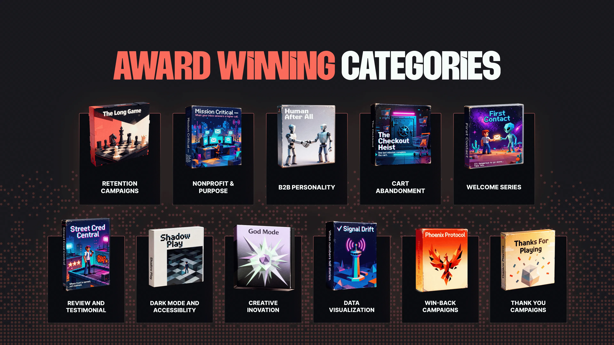
We selected 11 categories based on trends observed in Really Good Emails and the most frequently searched terms. We think this represents the kinds of emails we’re seeing in 2025. You may wonder why certain industries or topics aren’t covered. There are a few trends that we saw emerging—such as creator-led brands and influencer email marketing, as well as a significant influx of back-to-school campaigns—but they didn’t quite warrant full categories yet.
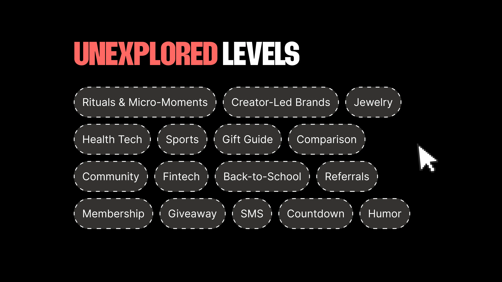
Justine Jordan: So this is a sneak peek of what’s coming?
Matt Helbig: Exactly. Predictions for 2026. All right. Are we ready? Let’s get started. First up, Meghan with the Welcome Series emails.
Best Welcome Email Award
Meghan Sokolnicki: First category: Welcome to the Welcome Series. This category is all about brands that made a great first impression. Email is the start of a relationship—your welcome email is the meet-cute. It sets expectations: why you’re here, why it matters, and what to do next.
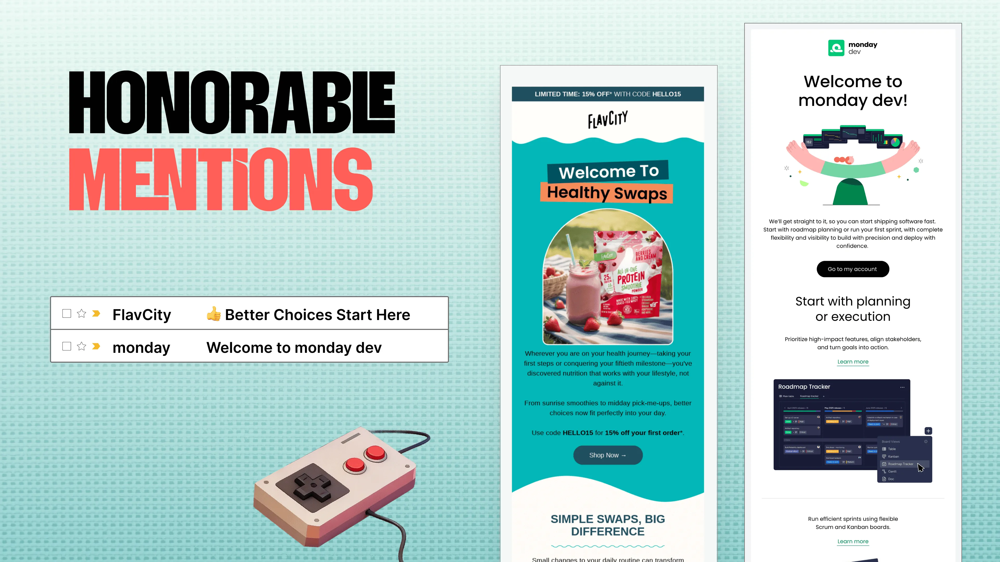
Each category includes honorable mentions, because we couldn’t choose just one. For this category, the honorable mentions are FlavCity and Monday. Before diving into content, both do a great job showcasing strong branding and clear intention. You receive a warm welcome and intentional visuals that highlight each brand’s strengths. FlavCity, especially, strikes a great balance between live text and imagery. I love how they incorporate graphics with background color while still using live text—creating impact while staying accessible. The subtle movement of the wavy lines is lovely. I really love both of these.
Justine Jordan: I’m also seeing a strong callback to the design trends webinar with those rounded corners.
Lianna Patch: One thing I want to point out in the Monday email copy is that they use a classic trick. “We’ll get straight to it so you can start shipping software fast.” “So you can” is one of the best ways to make sure your copy clearly states what’s in it for the reader. If you’re ever unsure whether your copy speaks to the reader, try adding “so you can.” That’s usually what you mean anyway. And I love that they lead with it in the first sentence.
Matt Helbig: Yeah, some really good standout examples. I know monday.com has a really strong onboarding series, so we definitely wanted to highlight that one. All right, let’s keep moving. And the winner is…Claude. Congratulations, Claude.
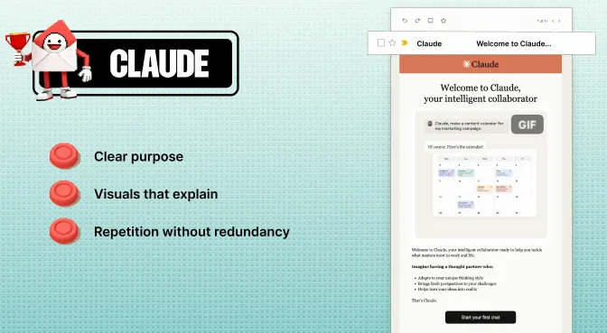
Meghan Sokolnicki: This is exactly what we look for in a really successful welcome email. Right off the bat, the branding is styled really nicely and gives you a clear sense of purpose. What’s especially effective is how they use visuals to explain relevance to the reader. When I think of a welcome email, it’s usually after someone has already taken that first action. Receiving a welcome email that immediately asks you to take another action, especially one that requires effort, can be overwhelming. What I like here is how they strike a balance between a warm welcome and a clear explanation of how they benefit you. It communicates: 'Good job, you made a good choice. Let’s continue this relationship together.' I think the GIF does an excellent job of showing what they’re all about and welcoming you to the team, essentially.
Justine Jordan: One of my favorite B2B SaaS welcome email tactics is using an animated GIF that shows what you can actually do with the product.
Lianna Patch: I would suggest using “Welcome to Claude” as a subject line, which could potentially encourage a little more engagement. But this is tricky for them, right? They’re talking about work and life, and that’s such a broad audience. I like that instead of forcing you to choose one or the other, they position themselves as your intelligent collaborator for both. Another classic copy move they use is “imagine having.” That’s a great technique in a welcome email. You’re showcasing the future your reader wants. From a formatting perspective, the use of bullets makes it easy to read. They also keep the same CTA throughout: “Start your first chat.” You know exactly what to do, where you’re going when you click, and what they’ll help you accomplish once you get there.
Matt Helbig: For me, I really like the setup, with the screenshot on the left showing how to get started and some tasks to be completed. That’s really smart. If you look at the full onboarding series, this is one of five touchpoints. Throughout the series, they introduce problems and show how to use Claude to solve them. I really like that framing. Even though these emails are fairly dense, spreading them across multiple sends over time creates a nice flow and sets you up for success with the product.
Meghan Sokolnicki: I’m also a sucker for icons. I love seeing an icon list like that. It’s a really nice design system. Everything follows the same structure, which gives you immediate brand recognition. Subconsciously, you know what to expect throughout the series, and the copy effectively reinforces the relevance of each send.
Lianna Patch: I would also bet that the second email, with those five use cases, comes directly from usage data or customer research. This is how other people are using Claude, and probably how you’ll use it too.
Justine Jordan: That’s a really good point. When I first signed up for Claude, which was over a year ago, I didn’t receive these emails. You can tell they’ve been iterating on this as they learn over time, which is a really strong example of how to improve onboarding.
Best Reviews & Testimonials Email Award
Matt Helbig: All right, we need to keep moving. Next up are reviews and testimonials. These were definitely popular. Everyone wants to include some form of social proof in their emails this year. Meghan, take it away.
Meghan Sokolnicki: Yeah. As LeVar Burton would say, don’t take our word for it. These brands did a great job not only of singing their own praises but also of letting their customers and members speak on their behalf. That creates strong social proof and brand buy-in. Let’s look at the honorable mentions. We have hims and Milk Bar.
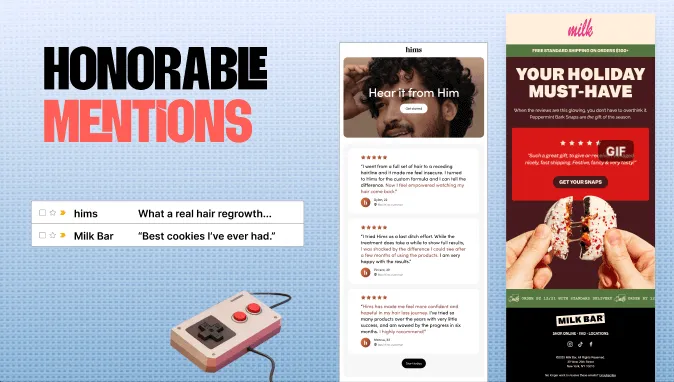I really like both of these emails for different reasons. They take different approaches, and both work really well. I love the headline with the play on “Hear it from hims.” Lianna might disagree, but I enjoy it. It gets right into the testimonials without a big sales pitch afterward. It does a great job of getting straight to the good stuff. Milk Bar takes a different approach. They tie the message back to relevance for the reader and use a quote to support that idea. They treat it like a gift. There’s a strong headline, clear hierarchy, and an animated GIF showing reviews that reinforce the message. Both emails do a really nice job in their own way.
Lianna Patch: The GIF is a super slick way to pack a bunch of testimonials into one piece of real estate.
Justine Jordan: That was exactly what I was going to say. Also, that imagery. If you’ve ever had Milk Bar treats, they’re incredibly delicious. That imagery is making my mouth water right now. I love it when imagery or copy in an email elicits a real human reaction. Yes, please give me that cookie.
Lianna Patch: I also like “Get your snaps” as a CTA. It’s a double entendre. You’ve earned it in two ways. Using social proof as a subject line, especially in quotes, is extremely effective in my experience. It’s like, okay, I need to see these “best cookies.” It feels like a challenge.
Matt Helbig: All right, let’s move on to the winner, Shift Robotics.
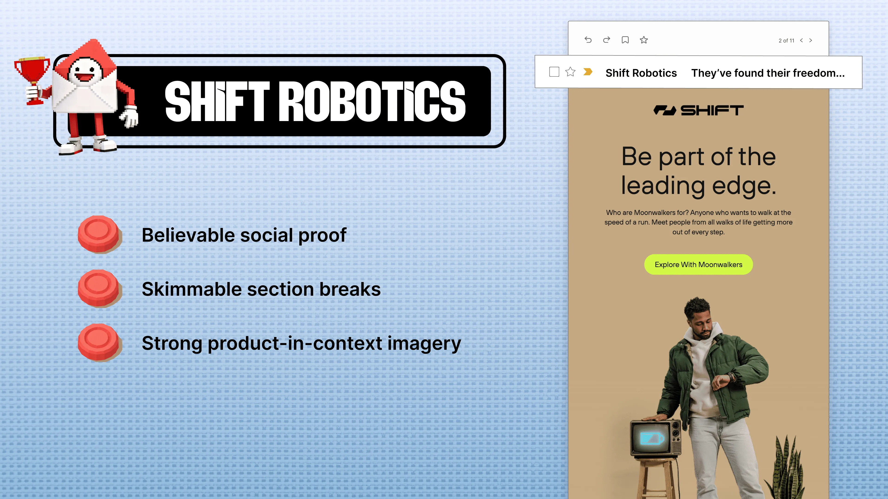
Meghan Sokolnicki: I’m a big fan of this one. You might not be able to see the entire email because it’s long, but they’re selling Moonwalkers. I keep calling them moon shoes in my head. It’s a unique product with a unique challenge, and I think it’s smart to use a testimonial-style email to showcase the product through people who love it. Essentially, they’re shoes with wheels. They still maintain a strong headline and a strong CTA, and they lean heavily into excellent product photography. The vertical layout doesn’t distract from the CTA and actually encourages you to scroll down to the testimonials. This approach makes a lot of sense for the brand. I’ve now gone down a rabbit hole researching these moon shoes, so it definitely worked on me.
Lianna Patch: What I find interesting is how affiliative the copy is. It appeals to futurists. It makes you feel like part of the leading edge. Normally, when I see the phrase “leading edge,” I’m skeptical. However, if you’re a robotics company developing cutting-edge technology, I’ll make an exception. It becomes an invitation. This is for you if you’re a forward-thinking futurist who wants to join an elite group of Moonwalkers. That’s a compelling message for the right audience.
Justine Jordan: I also saw someone mention the contrast with the bold CTA. I’ll keep referencing our email design trends webinar from a few months ago, where bright, bold CTAs were a major trend. I love seeing those trends reflected in our award winners.
Matt Helbig: They also incorporate social proof throughout many of their emails. Looking across their sends, it’s a consistent strategy. It’s an effective way to add credibility without overwhelming the message.
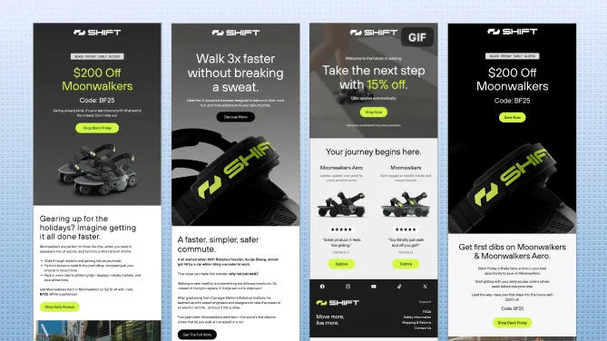
Social proof can be a small but powerful element you layer into different parts of an email, or place right next to the product to show that other people enjoy it. I really liked that detail. And the visual consistency across the series is incredible.
Meghan Sokolnicki: I just wanted to say it’s refreshing to see retail emails that don’t rely on being salesy all the time. It’s easy to fall into the trap of “buy now, here’s a discount.” They do that when needed, but they balance it with benefits and social proof. Their concepts are clever, and the visual styling is chef’s kiss.
Lianna Patch: Two things I loved: telling the origin story of the product and explaining that it’s good for commuting. That idea of building a walkable future really resonated with me. And that first headline, “Walk three times faster without breaking a sweat,” is excellent. They could have said “Walk faster with Moonwalkers,” but instead they made it specific and quantifiable, and added the “without” piece. Without sweating. Without the thing you hate. Without arriving at work uncomfortable. That’s a great formula.
Best Data Visualization Email Award
Matt Helbig: Fantastic. All right, moving on to data visualization.
Meghan Sokolnicki: Yes. In this category, it’s not just numbers. It’s not saying, “Look at our numbers.” It’s: what are we actually doing with that data? How are we using those numbers and the information we know about you to craft a story that compels engagement and, hopefully, action?
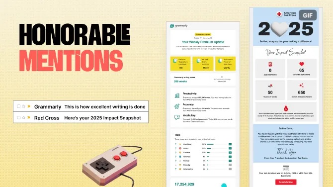
So, the honorable mentions for this category, drumroll, are Grammarly and the Red Cross. I really enjoy both of these emails, and they share many similarities. Design-wise, they use color blocking really nicely across different sections. And again, they’re not saying, “Here’s how much we raised this year.” It’s not just general metrics. They’ve personalized the metrics to your experience, creating that personal connection that shows they’re paying attention, but not in a creepy way. It can go creepy very fast. It’s also nice to see that both of these emails use live text to display the numbers and iconography. That’s a great approach versus making everything a graphic. It’s scalable, so they can send it to everyone in their audience, and it prioritizes a live-text, accessible experience.
Justine Jordan: The thing that has always stood out to me, and why I love Grammarly emails in particular, is that they become part of the product experience. I don’t have to leave my inbox to be prompted to use the product or to gamify my experience. It’s such a clever use of email, especially in a B2B product landscape.
Lianna Patch: I was going to say, even B2C, for retail users of Grammarly. This is a great retention play because it’s very easy to think, “I’ve got to cut subscriptions.” If you haven’t thought about Grammarly in a while, this keeps reminding you of the value week after week.
Matt Helbig: Yeah, we’re definitely seeing more “wrapped” campaigns this year than ever. Any time you can use your data to show what’s been happening in your product, or make it personal to the subscriber, people really enjoy it now. I think they’re moving away from it, feeling super creepy, and more toward being genuinely interested in it. All right, moving to the winner. We’ve got McDonald’s.
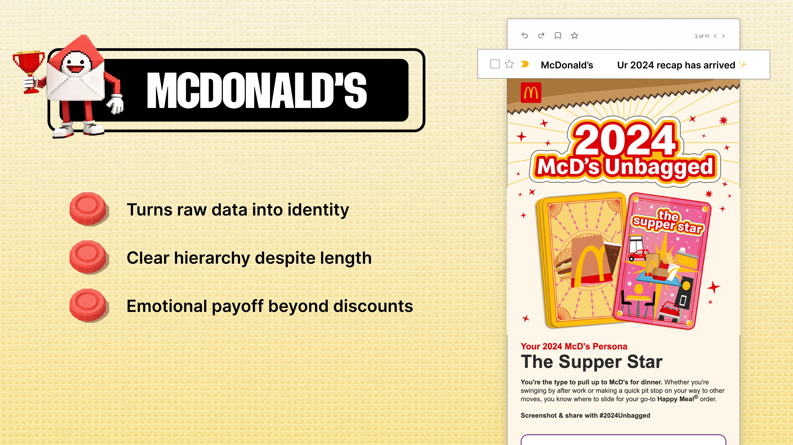
Meghan Sokolnicki: I’m kind of obsessed with this email, honestly. I know it’s McDonald’s, but I think they’re so clever in how they approached this. They’re using data they have on you, which, let’s be honest, could be pretty unflattering if they said, “Hey, you ate 50 cheeseburgers this month,” or something. They’ve got dirt on you. Or like, “What time do you usually go?” We don’t need to know that. But instead, they use that data in a personal way to give you a persona. For me, it’s like, okay, you’re paying attention, and I’m learning something about myself. It’s really clever, and visually it’s really striking. Even without the graphic, which features nice movement and is well-designed, they still include the headline and text as live text. So even if you can’t experience the image for whatever reason, you still get the same value from what they’re sharing. I think they do a really nice job balancing both.
Justine Jordan: Real quick, since you mentioned live text, someone in the chat asked if we could explain what that is. This is a good opportunity. Live text is any text that isn’t part of an image. When we say “live,” we mean it’s actual written text, not something you exported from Canva as a PNG or JPEG. The benefit is that it’s readable even when images are turned off. So, text in HTML format.
Lianna Patch: You already know I love the headline, right? “The Supper Star.” I also like that they’re taking advantage of this trending tarot thing. I wish they called them “HERO cards” instead of “potato,” but that’s not working, is it? The subject line, with the casual “UR”, is very much in line with their normal voice. It’s like their billboards, where they shorten everything. It feels casual because that’s how McDonald’s is supposed to fit into your life, right?
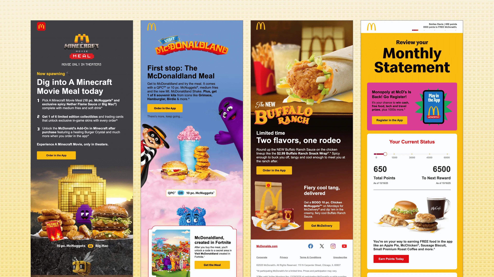
Matt Helbig: Across their emails, they do a really good job of making them feel thematic. In this Minecraft version, they’re taking a different approach to their logo. And I’m really impressed that they’re able to use live text throughout so many of their emails, even with something like that Buffalo Ranch example, with a bit of gradient. Across the board, they do a fantastic job of taking risks and making the emails feel exciting and cool to open, while still incorporating a lot of live text, which is great to see.
Justine Jordan: It’s also a great example of how any brand can experiment. You don’t have to follow a strict, same Z-template from send to send, especially when you have strong brand principles, copy, and other fundamentals in place.
Matt Helbig: We also received a quote from Jason at Digitas, the creative agency behind some of these emails.
Meghan Sokolnicki: Jason said, “A good email earns attention, delivers value, and makes the next action feel obvious.” Couldn’t agree more, Jason. It’s clear they have a great team of graphic designers making these. It’s really nice to see that balance, like you all said, between strong graphics and the accessible principles that make emails effective.
Matt Helbig: For sure. All right, let’s move on. Many people have asked questions about dark mode, so I’m excited to address this one.
Meghan Sokolnicki: Yes, dark mode. This is about ensuring that everyone, every device, and every platform has access to these emails without barriers. Designing with every experience in mind. There are numerous directions we could take with accessibility, but we’ll focus on dark mode with these winners.
Best Dark Mode Email Award
Matt Helbig: It’s pretty hard for us to test every single email for dark mode on Really Good Emails before we add it to the site. But for this category, we specifically looked for emails that had elements set up for dark mode styling, where the email client supports it.
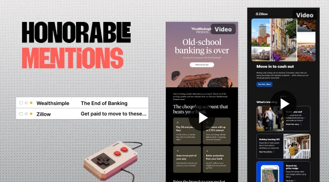
So, our honorable mentions are Wealthsimple and Zillow. They’re going back and forth from light to dark. I love seeing this, because it’s clear they prioritized both experiences. Dark mode can easily feel like an afterthought, so it’s great to see there’s no loss in value or experience between the two. It’s thoughtful. Design-wise, they employ some of the same techniques, such as color blocking certain sections or using a border, which lends itself nicely to switching between modes. I also love how Zillow swapped out its logo. Little things like that. Same value, just fine-tuned for each experience.
Matt Helbig: Definitely. All right, and the winner for this one is DoorDash.
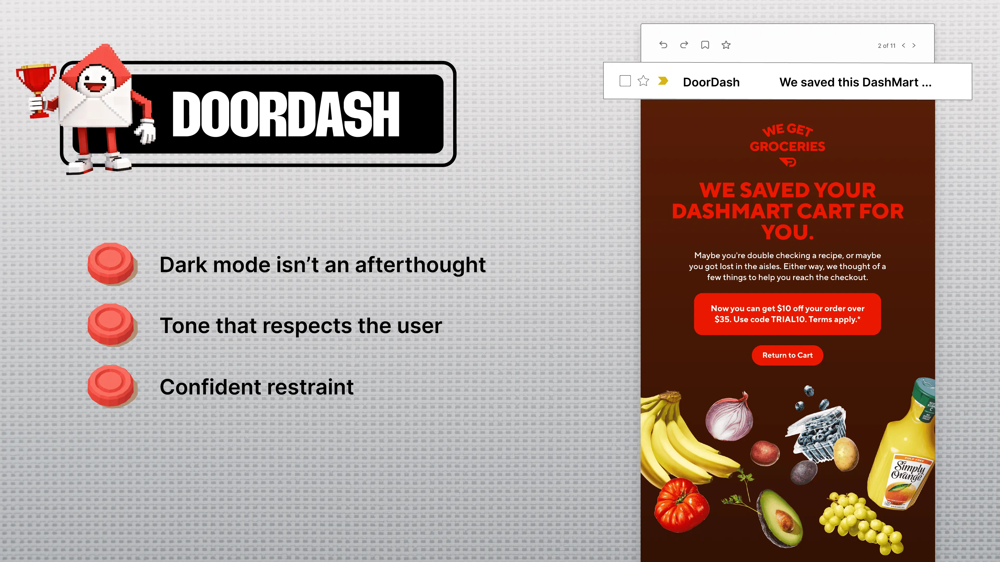
Meghan Sokolnicki: Same idea, but DoorDash really goes above and beyond with dark mode. It’s clear that they have a separate styling setup for dark mode preferences, and they really lean into it. They have a strong brand personality, and they’re showing what you can do across light and dark. Dark does not necessarily mean everything has to be black. Across their campaigns, they employ different dark color schemes without adhering to a strict model. I really like seeing that personality. They know their audience, they know they can have fun with it, and it’s exciting.
Lianna Patch: I also love that we’ve moved away from the abandoned cart trend of, “You forgot this, you huge idiot, come back and finish paying us.” Now it’s more supportive. “We saved this for you,” “We’re here for you,” “We’ve got your back,” instead of, “You made a mistake.”
Matt Helbig: All right. We’ve got a quote from Tyler from DoorDash.
Meghan Sokolnicki: And I love this. He said, “Great email doesn’t feel like email. It’s the product you’re already using. Consistent, seamless, allowing you to appreciate the design without being jarred from the experience.” I love that.
Subject Line Trends (2025 vs 2024)
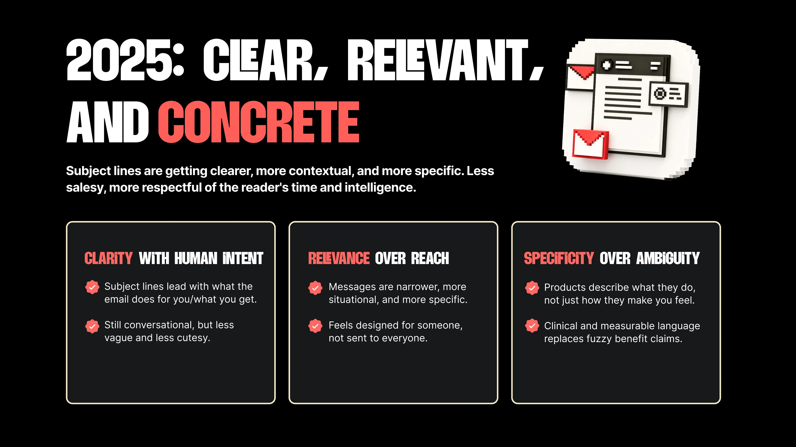
Matt Helbig: One thing we say is that really good email is often an extension of the product, so it’s great to see an email that truly feels like that. All right. How are people feeling so far? We’ve got a lot of questions. A little breather here between sections. Okay, great. Here’s a quick comparison. Every year, we review the emails on the site and compare the subject lines from 2024 to 2025. In 2025, we definitely saw more subject lines leading with what the email does for you and what you can expect to receive. The value prop is right there in the subject line. We’re still seeing effective hooks, such as the curiosity hook, where it’s “open to reveal,” or something similar. But we’ve seen them become a little less vague and a little more direct about what the email is actually going to do, which I think helps you stand out in the inbox. As AI leads to increased one-to-one communication for personalization, we’re seeing more subject lines that are narrower and more specific to you as an individual. To me, that’s a good extension of making an email feel more one-to-one. When the subject line is more personalized, it feels like it’s for you. We’re also seeing, and this is probably not as significant a trend, more numbers and statistics, actual measurements, included in subject lines, rather than vague language. Overall, subject lines are a bit more direct and concrete this year compared to last year. All right, we’ll keep going to Justine’s section.
Justine Jordan: Thank you. Before I delve into my categories and award winners, I'd like to share something truly remarkable with you. One of the things I love most about the email community overall is how curious we all are. You can’t really go to college for email marketing, and practical courses on how to build a great HTML email don’t really exist. Web tutorials are rough because rendering would just be a disaster. For as long as I’ve been using email, everyone I know has been learning by observation and trial and error. You save emails, you dissect them, you attend webinars, and you do everything you can to dig in and see what makes them tick under the hood. And that process can be super messy. Have you ever tried to inspect the code from an email on your phone? It’s basically impossible. You have to obtain the source, rebuild it in your preferred editor, and hope for the best.
This is why I love Beefree’s HTML importer. We introduced it earlier this year, making it extremely easy to bring an existing email into the editor, understand its structure, and then make all the desired changes, such as changing layouts, colors, spacing, and incorporating your brand, rather than starting from scratch. What I really love about the HTML importer is that it helps you transition from inspiration to creation more quickly. If you’ve ever stared at a blank template and frozen because you don’t know how to recreate that cool thing you saw in this webinar, you can start with references, layer on ideas, and learn by experience, by seeing and doing.
I’m a kinesthetic learner. I can’t learn from watching a video or reading something. I have to put my hands on a thing and see how it works. So the HTML importer is a great way to do that. Check it out, and we’re happy to tell you more.
Matt Helbig: Yeah, I’ve been blown away with the results. With Really Good Emails, when we transitioned to Beefree, importing our templates used to be a hassle because we had to rebuild everything from scratch. However, simply placing our existing HTML into the importer and making it editable within Beefree immediately saved us a significant amount of time.
Justine Jordan: So it’s a hardcore migration assistant tool as well, that’s for sure.
Best Nonprofit & Purpose Email Award
Matt Helbig: Definitely. All right, Justine’s nonprofit and purpose emails.
Justine Jordan: Nonprofit and purpose is one of my favorite categories. It’s just a hard job to do. I'd like to pause for a moment and thank all the nonprofit professionals who may be in the chat today. I see you, and I thank you for your hard work and all the effort you put in, because these emails have a really tough job to do. They have to spark a human, emotional connection between the audience and the company’s mission. So, let’s check out some of our honorable mentions. Two of my favorite brands are GoFundMe and CaringBridge.
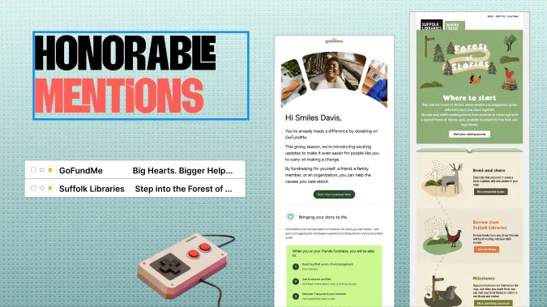
They were, in particular, very full circle for me because I needed those services this year to set up sites for a very dear friend of mine who was going through cancer treatment. The other runner-up is Suffolk Libraries. I feel like a broken record, because this is the fourth time I’ve mentioned the email design trends webinar. However, in our past trends, you can see how Suffolk Libraries, in particular, uses imagery to guide users down the page. Not only are they telling a story in their copy, but they’re also telling a story with the visuals, helping you make that human, emotional connection to the brand. They’re asking you to believe in something bigger, tying together clarity, purpose, great copywriting, and most importantly, a clear CTA.
Matt Helbig: Yes, we don’t receive a large number of nonprofit email submissions. If anyone has great nonprofit emails, please send them to us. These examples show that nonprofits don’t have to be boring. The design can be good, it can be elevated, and it can communicate the message really effectively.
Lianna Patch: Totally. That one sentence, “You’ve already made a difference,” is probably super effective. I believe that nonprofits, especially those involved in rescue and fundraising, often struggle with compassion fatigue. It’s like, yes, the problems are endless, and we all know that, and we’re being barraged by it. Pointing out that your contributions have actually made a difference is more likely to encourage you to continue donating, rather than saying, “Hey, there are still 500 more fundraisers you could contribute to.” Not that that was on the table for them, but maybe it was.
Meghan Sokolnicki: I completely agree with all of that, especially the through line of the stories. It’s really nice, and they do a great job balancing that illustration style. On mobile, too, nothing is really lost. You still have the same fluidity throughout, which is nice to see. And a quick note on the GoFundMe example: the image of the slide roll, instead of a standard image, feels so intentional and purposeful to me. It feels like you’re flipping through a friend’s photos. When I first saw this, I didn’t expect to have an emotional reaction, but I did. It really feels like you’re thumbing through something. So yeah, I like both of these a lot.
Matt Helbig: All right. The winner, and their emails are so great, is Charity: Water.
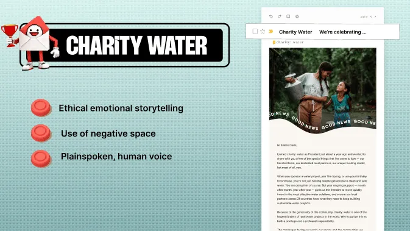
Justine Jordan: I love Charity: Water’s emails. One thing that stood out to me about this one is that storytelling seems to be all the rage right now. I think it’s this central new story in how we’re learning to live with AI and balance this new world of automation and humanity. Charity: Water does an excellent job of taking what could be a very text-dense story and bringing it to life with typography, white space, and even this test in the middle of the email. If you’ve been doing email long enough, you remember when interactivity was all the rage a few years ago, with complicated code. I love these simple yet effective ways to help people feel engaged with the brand and emotionally connected to the story. It’s like: I’m learning, I’m connecting, there’s some interactivity. It ticks all those boxes and makes it feel really awesome. If you look at the whole series, especially if you’re a typography nerd like me, that second email has that big, juicy smart quote in the headline. A smart quote is the curly kind, not just a straight tick mark. I’m a big nerd for a good smart quote and good typography. You see it all over this series, and it’s accessible too, which is especially important in this category, given the ethical mandate.
Lianna Patch: Yeah, they’re doing a lot of the things we talked about, like congratulating the reader for being part of it. One thing I’m noticing is the repetition of that photo with the “good news” banner underneath it. When you open an email and see an image like that, you don’t know if it will be a plea for help or a celebration. They make it explicit as you scan: this is an email that’s going to make you feel good.
Meghan Sokolnicki: From a visual perspective, they’re truly experts at crafting warm imagery that evokes emotion and has a softness. Again, they focus on the copy rather than the plea. It feels more personal to you. I also like how restrained they are with their graphics. They’re simple and intentional, and they do a great job with that.
Matt Helbig: We received a fantastic quote that I really loved.
Justine Jordan: I love that we reached out to the creators of these emails and got a story from them. If any of you are in the chat, I want to hear from you. Anthony is discussing the sense of belonging again and how there’s no one easy way to achieve it, or to spark an authentic connection between a nonprofit email and its audience.
Matt Helbig: Fantastic. Alright, next up: thank-you campaigns. We definitely saw an increase this year in “thank you” searches, so I’m excited to dive into this one.
Best Thank You Email Award
Justine Jordan: Yeah. Thank-you campaigns are really interesting to me, too, because even if we look at the honorable mentions, you can see that they represent many different ways of saying thank you. It's a pleasure to thank you for placing an order, for your loyalty over the years, and for signing up for our emails. The two honorable mentions are a blend of all of these.

The Waymo example incorporates elements we discussed in earlier award winners, such as data analysis, but here it’s thanking you for your loyalty, for being a steward of the brand, and for using their service. The email from Postable is another area where I get really nerdy about email. It’s hard to do well, displaying data automatically, and something that could be super boring, like an order confirmation. And this one is visually stunning. The information is still clear. You can tell whoever designed it pulled in all of the information and arranged it in a really intentional way. I also appreciate the transparency at the bottom regarding the need to cancel. People don’t have to dig or beg for customer service. It ticks all the boxes and makes what could be a really boring transactional email feel genuinely engaging.
Matt Helbig: All right. And the winner here is Attentive.
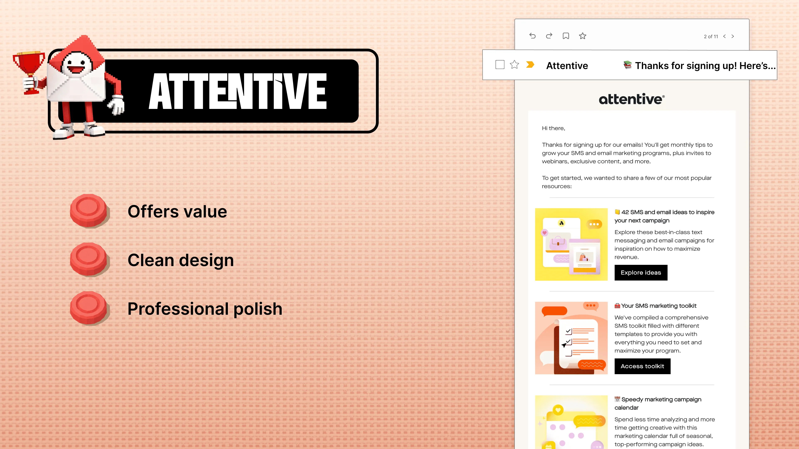
Justine Jordan: Yeah, Attentive takes this and runs with it. This is a thank-you email for signing up for their campaigns or their email program, and they offer a lot of value. One of my golden rules for a thank-you-for-signing-up email is that you give people a sneak peek and a payoff of what they’re going to get by subscribing. Attentive does an excellent job with that here. You can see that the rest of the email includes links to all the resources you can explore in their campaigns, along with clear CTAs, bold colors, and engaging copy. What do you say?
Lianna Patch: Yeah, they’re doing the same thing Claude was doing in that second email. It’s like, here’s your menu of things you can do, probably ranked by what we know people want to do most. And then “42 SMS and email ideas to inspire your next campaign” is more interesting than anything without the number. Right. We’ve got specificity again, and then we’ve got that catch-all CTA at the bottom, “Discover how the best brands use SMS,” which moves toward that aspirational “be one of the best” angle we saw with Moonwalkers.
Matt Helbig: And there are two more here. They’re really saying thank you a lot in both emails, which I thought was interesting. I thought this was really interesting too - the webinar example, where a thank-you gift is sent after attending the webinar. We’re definitely seeing more brands try something like that. It definitely feels like you’re being seen. Very Really Good Emails.
Lianna Patch: I maintain that the physical world is going to be our differentiator in this world of AI and constant outreach. What’s real? A thing that arrives at my house that you gave me is always real.
Best Retention Email Award
Matt Helbig: All right. Retention campaigns.
Justine Jordan: Yeah. This one is all about those emails that keep bringing you back for more, whether it’s more great emails or really great products. That consistency over time is what makes a stellar relationship. So we’ve got, how do I pronounce this? Is it Pelago?
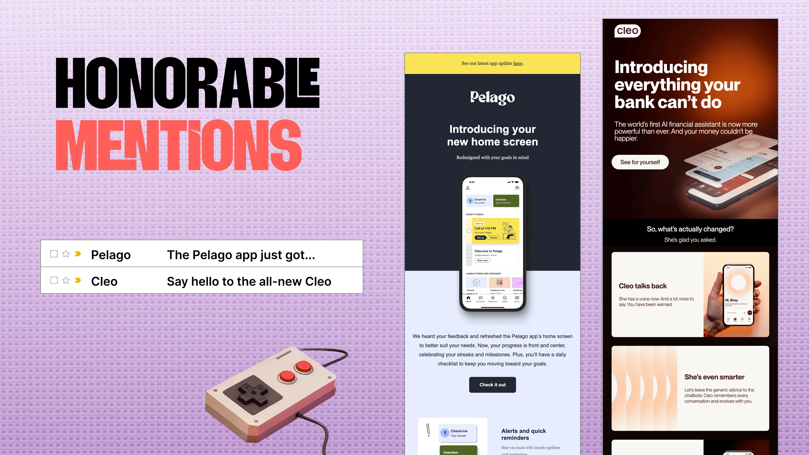
That sounds right. In both scenarios, and I don’t want to steal all the copywriting thunder, I love Cleo’s brand voice in particular. They made all those headlines a few years back about being really sassy and knowing their audience. Especially when you’re trying to entice someone to come back, whether they’ve lapsed or you want them to keep engaging with you, knowing what resonates and incorporating that into the story makes a huge difference.
Matt Helbig: For retention, we see many brands, especially in SaaS, sending product updates. You can fall into a trap of talking about yourself all the time. However, the brands that do it well position company updates in terms of how they save you time, how they make you more productive, and similar benefits.
Justine Jordan: And “this is how we heard your feedback” is always, I wouldn’t call it a trope, but it’s a very good one. Addressing someone’s need and making them feel heard and listened to can be a really effective strategy.
Matt Helbig: All right. The winner for this one is Lush.
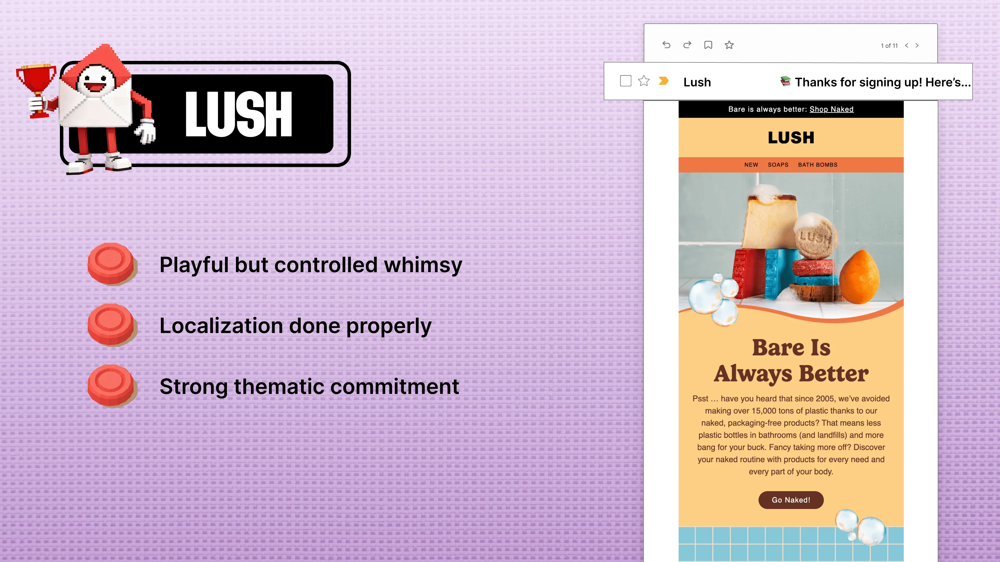
Justine Jordan: Lush, and what a lush email. Their imagery. This feels like I want to touch this email. I want to run my fingers over it and feel the tiles, experience the texture, and smell the bubbles. It’s not only whimsical, but I also love its textural quality. If you’ve ever been into a Lush store, you know you get hit by this wall of visceral experience when you walk in. It smells good. They have places where you can experience the products. I also love the diversity in the imagery. They’re showcasing people with diverse genders and skin tones, individuals with unique tattoos, and users of the products. And even that bold CTA, “Go Naked,” right? “Bare is always better.” It hits all the marks for me.
Meghan Sokolnicki: I love the tile so much, as you said. You feel like you’re there, you feel the texture. Their imagery is really nice. I also noticed that they have a CTA at the top, but then use an arrow icon everywhere else. That’s interesting to me, and I wonder what kind of engagement they get from that. Perhaps that’s an opportunity to really play with the alt text, ensuring the copy remains strong even without those button-style elements. Again, it’s nice to see a potential sales email that isn’t so upfront about it. It’s so fun.
Matt Helbig: What stood out to me most is the localization. On Really Good Emails, we receive feedback all the time that most of the emails we feature are in English, but I was impressed with Lush's ability to maintain a strong design across multiple languages and market support. Many of these campaigns are tailored to specific markets, so it’s impressive to see the visual style carry across different languages.
Justine Jordan: Totally. Because localization is more than translating the copy. It’s about making it relevant to that market, culturally appropriate, and all of that.
Lianna Patch: Yeah. It’s a great example of setting up a design system and still playing with it to incorporate personality, whether that’s regional or driven by the copy.
CTA Trends & Insights
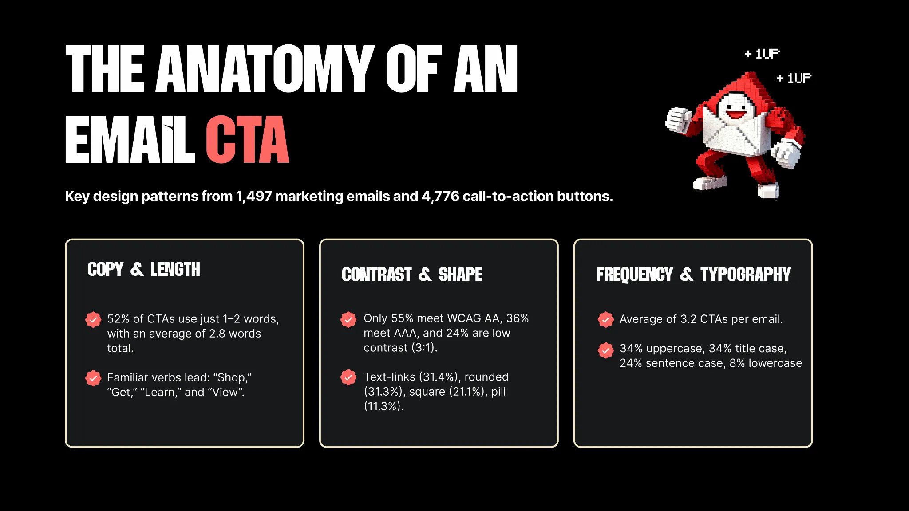
Matt Helbig: All right, another breather section here. I think we’re doing okay on time. Thanks to everyone for sticking around. I’m having a great time, and I hope everyone else is too. We’ve got a little more on trends. We took a sample of CTAs from the RGE library across 1,497 emails, and we saw some trends. Nothing too out of the ordinary, but we wanted to bring them to your attention. Hopefully, next year we can provide a more in-depth CTA report across all the different emails. This is our first sample. We’re seeing that most CTAs include one to two words: shop, get, learn, and view. Those stood out to us. One thing I want to bring to people's attention in the chat is that we only found 55% of them actually met accessibility standards. So definitely check your CTAs for accessibility. It’s something we’re always trying to do with new submissions on Really Good Emails. And I’m always curious what people think about title case, uppercase, and sentence case. There’s always a debate about which one is best for CTAs. It’s a pretty even split here. It’s also interesting to see that it averages around three CTAs per email. Cool. We’ll keep moving to the next category: win-back campaigns.
Best Win-Back Email Award
Lianna Patch: I love a win-back campaign. We’ve all heard the metrics, like it’s seven times more profitable to keep an existing customer than it is to acquire a new one, right? I love a good win-back campaign, whether it’s SaaS, e-commerce, or any other industry. I like that we’re calling it “reopening the save file.” If I played games. Our two honorable mentions are Shopify and Zapier. I put that in the chat, and it lives rent-free in my head now.

Shopify says: “Come back to rewards and faster finances. Your money hustles for you when you connect it to Shopify Balance.” So it’s telling me exactly what I’ll get when I reconnect. Get rewarded, get paid faster, earn 2% cash back. It organizes all those features clearly, and probably in the order of importance that they are familiar with. And then: “Your Zapier trial has ended.” Sad face. If you’re ready to continue learning and creating, you're welcome to return. Here’s the plan we recommend for you. I like that they say, “We’ve downgraded you, we’ve put you back on a free plan, but here’s what you still have.” And if you decide to stay on the paid plan, you unlock advanced functionality, AI-powered steps, and multi-step automation. This is something we’ve been talking about in my SaaS work lately. How can you start people on a full-featured plan and downgrade them without making them feel like you’ve thrown away their work? More like, “We’ve put a transparent gate in front of the work you’ve done. You can still see it. You should upgrade, or keep paying us, so you can access it.”
Justine Jordan: It’s like loss aversion, but not hardcore, right? Just the right amount of loss aversion. Yeah, exactly. I also love that there’s so much text in both of these, but it’s well-balanced in terms of hierarchy, design, color blocking, and use of iconography.
Lianna Patch: And we notice that we don’t get a CTA in the email until we reach the plan section. So there’s nowhere for us to go until we’ve read through, or at least skimmed, the value we’re going to get.
Meghan Sokolnicki: Yeah, I think for these kinds of emails, this is where copy really shines. You don’t need flashy graphics for this. We know people aren’t engaging in the same way, so focusing on that main headline is key, and both of these do it well. I love the list format we’ve talked about, and also the color blocking as a way to create that list structure without needing bullets, per se. I love both of these.
Matt Helbig: The winning email is from Apple. It’s very simple, but probably one of the more popular ones on the site, which is really cool to see.
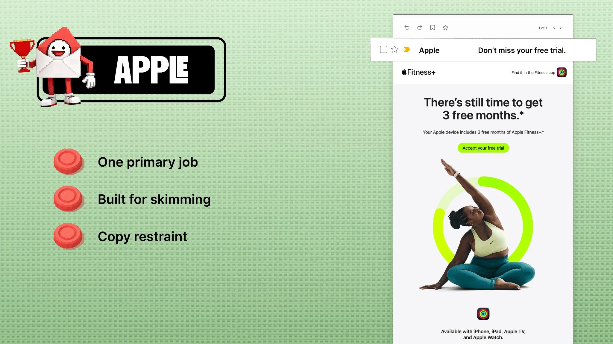
Lianna Patch: Yeah, I like that it’s a one-two punch with the subject line. “Don’t miss,” there’s that loss aversion Justine was talking about, and then inside we flip to something more aspirational, like, “There’s still time.” It almost feels like they’re doing us a favor. Then we’ve the loading graphic that matches the color of the button, and the button reads “Accept your free trial,” again. It feels like we’re being given a gift, right? It’s so simple. There’s nothing else to do here. We have to click through and accept this free gift.
Matt Helbig: Just across their emails, I think they do a really good job balancing product updates and more transactional emails tied to services, whether it’s Apple Cash, Fitness, Music, or something.
Lianna Patch: I would guess, I don’t know what the segmentation was for these emails, but it tends to be that if you have more education or sophistication around a product, you’ll get more technical details with Apple. So, if you’ve been considering a MacBook Pro and haven’t bought one yet, maybe they’re launching this campaign to say, “Hey, look at all the specs. We upgraded the RAM,” or whatever it is.
Best Cart Abandonment Email Award
Matt Helbig: Fantastic. All right, next up: cart abandonment.
Lianna Patch: Oh, yes. My second favorite thing to discuss is what we previously covered. What they left behind, why it mattered, and not making them feel bad if they decide not to buy from us right now, while also making it easy and frictionless for them to return and complete their purchase. Even that can feel like a sense of completion, right? Even if they’re not thinking about what they’re going to get. So let’s look at the runners-up.
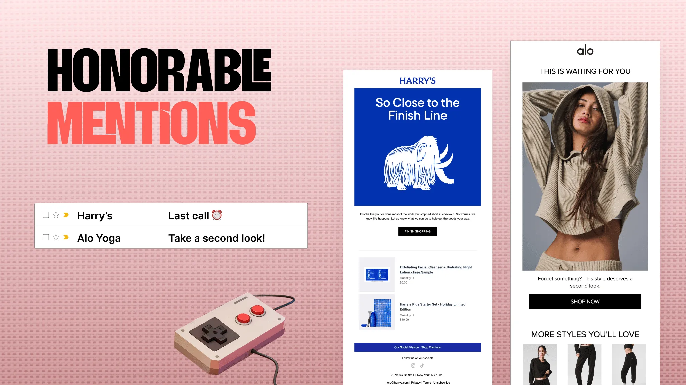
Okay. Harry’s. We love a GIF with a cute little animal. They have a little pig trotting along.I like that he’s moving toward something, right? He’s moving us back to the cart. I know exactly what to click here. “Finish shopping” speaks to that sense of completion, right? I also have a preview of what’s in my cart. You always want to do that in an abandoned cart email, because I might have 15 abandoned carts and I've forgotten which item was from which. “Last call.” We have that sense of urgency in the subject line. And then Alo was like, “Hey, do you want to be hot? Here’s your chance to be hot like this girl with her waffle sweater. Come back.”
Meghan Sokolnicki: Yeah, for these kinds of emails, this is where imagery can really shine. In contrast to what I said in the last category, this is where that visual reminder really matters. Even if you don’t have product imagery as striking as this lovely person, having some kind of animation in the headline, something really stylized, and a high-contrast graphic can be great for grabbing attention and serving as that reminder that you forgot something.
Matt Helbig: Definitely. And the winner here is Rebel Rabbit. Their emails are always exciting to me.
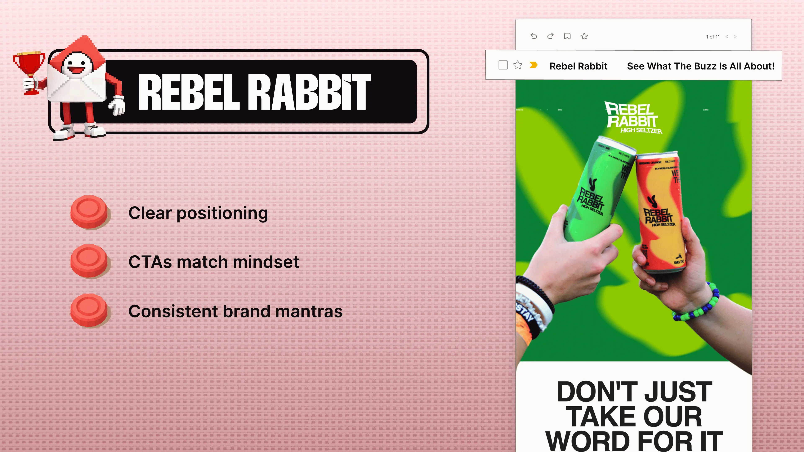
Lianna Patch: Oh yeah. “See what the buzz is all about.” I would like a little more emphasis in the subject line that this is a cart abandonment email, but we’re showcasing the product, and it’s not just product photography. It’s kind of psychedelic. It’s an appeal to the person who wants to be buzzed. “Don’t just take our word for it.” We’re not just selling seltzers. We’re offering an alternative path to a world where fun, individuality, and rebellious spirit are celebrated. That’s the invitation to the in-group, right? If this resonates with you, come join us. Your people are here. And we’ve got all that social proof supporting the CTA: “Take me to my cart.” Effortless. Whisk me right away.
Matt Helbig: This is one of those rare examples where we’re combining different sections, like including social proof in a cart abandonment email or recommending additional bestseller items. It’s pretty cool to see.
Lianna Patch: They’re also doing something fun in the copy. They’re amping us up, leading us to the top of the mountain, and then doing this jokey deflation where it’s like, “Also, we’ve still got your cart.” So it’s like, “Join us. We’re amazing. We’re going to get high. Also, here’s your cart.”
Meghan Sokolnicki: I like it. It feels like they’re looking out for you. They could say, “Hey, you forgot,” but the tone is more like, “By the way, we’ve got you. We saved this for you. Don’t forget.” Even though they’re still like, “Give me your money.” They do it in a nice, playful way. And I’m a sucker for giant headlines. I really love giant headlines, so I love that they lean into that. Even if the graphic wasn’t there, you’d still have that strong headline supporting the message and creating visual impact without needing an image.
Justine Jordan: Big, juicy text. Yeah. You often discuss the minimum font size to enhance accessibility and readability on mobile devices. When you do it really well and consistently across the entire brand and all its campaigns, I love it.
Lianna Patch: Brand-wise, it looks like they’re trying to own “buzz” and take “buzz” away from alcohol, which I think is really interesting.
Matt Helbig: Yeah, across these emails, a lot of fun CTAs. In that comparison section, that’s definitely a big trend. We’re seeing more brands use those “us versus them” modules in their emails. Across these emails, there are numerous fun and interesting sections to keep people engaged. And we got a quote here from Robbie.
Lianna Patch: Oh, Robbie. We love Robbie. Simon is in the chat, too. Hi, Robbie. Robbie said, “A Great email means consistently creating an experience that adds value beyond the transaction. It makes your audience feel seen and makes them excited for their next message from you.” Couldn’t agree more.
Best B2B Email Award
Matt Helbig: All right. B2B. B2B is boring, right?
Lianna Patch: This is the hill I have died on so many times and will continue to die on. You should know Matt had to talk me down a couple of times because I kept adding emails to this category, and he kept saying, “That’s not from this year. That’s image-only. That doesn’t have live text.” So, within our parameters, we have some good, subtle examples of personality. Let’s look at our runners-up. We have Plaid and Teachable.
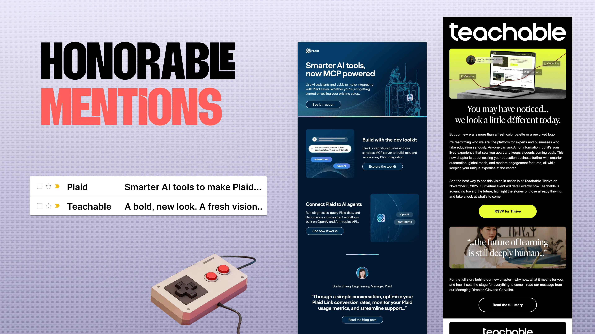
Plaid is bringing in personality through the graphics, right? In financial and banking emails, there’s often no effective way to visualize the product or engage people. They have little people dropping down onto your phone, literally bringing humanity into the tech side of things. They offer an invitation to come into the dev toolkit if that’s what you want to do. This is clearly for a more technical audience. And there’s a trend we’ve been seeing in a lot of these financial, banking, and tech emails where they’re zigging instead of zagging. They position themselves against big institutions like Bank of America and Wells Fargo. It’s like, “We’re young and cool. We’re hip. We’re not like the other banks.” Plaid does that in a lot of their emails. And then Teachable. This is them rolling out their rebrand, right? One easy way to explore B2B personality is by breaking the copywriting rule that says never say “we,” “our,” and “us.” If you’re going to take a stand and tell us who you are, you probably have to say “we,” “our,” and “us,” and talk about yourself a little bit. They split the difference here. “You may have noticed we look a little different today.” Then, they discuss the rebrand, what it will do for you, and invite you to RSVP to an event as they roll it out. And the quote at the bottom, “The future of learning is still deeply human,” feels very much in alignment with Teachable’s mission, in my mind. They’re reminding us: we may look different, but we are still the same people.
Meghan Sokolnicki: That italicized “I” in different, it’s scratching some kind of itch for me. I love it so much.
Justine Jordan: I also love the contrast. It’s a very bold email, and I love the serif font they used in the headline, too.
Matt Helbig: Yeah, definitely. And the Plaid email, it being all live text, really stands out from some other B2B emails. We see a lot of image-only emails, so it’s great that all of these examples include a lot of live text.
Lianna Patch: This is one of my favorite emails from Goody, which is a gifting platform.
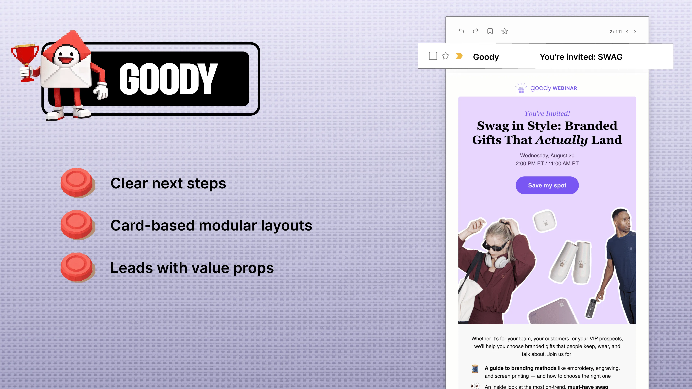“You’re invited: swag” as a subject line. That’s also scratching something in my brain, Megan. “You’re invited: branded gifts that actually land.” This is where the personality comes in, right? And this is one of my favorite emails from Goody, which is a gifting platform. “You’re invited: swag” as a subject line. That’s also scratching something in my brain, Megan. “You’re invited: branded gifts that actually land.” This is where the personality comes in, right? Goody positions itself as the anti-corporate gifting platform that’s still appropriate. “Send better gifts that land.” They use a fun image-collage style. They’ve got the Andy from Parks and Rec GIF. They made a meme out of their own event. What I really like about this webinar invite is that it shows you who’s hosting. It’s not just “Join us and find out.” It’s these nice people. And one of them is the CEO. If she’s important enough to be there, I probably am too. Take a look at their beautiful metallic hero text. It’s so shiny. I love shiny things. I’m basically a magpie. As with any gifting platform, I’d expect to see the gifts front and center, and they’re doing that well. “Level up your messaging and gifting.”
Matt Helbig: For me, in that holiday gifts section, I really like how they switch the CTA colors. It still feels fully in line with their brand, but it matches those different sections. That was a nice touch. And across the board, using live text in some of those product sections, I think they do a good job for B2B.
Justine Jordan: Overall, when I first saw these, I was like, these are B2B? They don’t look like it. This is such a good example of how B2B doesn’t have to be boring.
Best Creative Invitation Email Award
Matt Helbig: All right. We have our last award here: the creative invitation. Thanks to everyone for sticking around. We have some really creative emails that I'd like to share with you.
Lianna Patch: Yeah. This is where the Really Good Emails platform truly shines, as there are numerous compelling examples. How do we make email new and different? I think the group of people in this room right now is best positioned to answer that question, out of anyone in the world. Let’s check out our honorable mentions. We’ve got Keurig and Action Rocket.
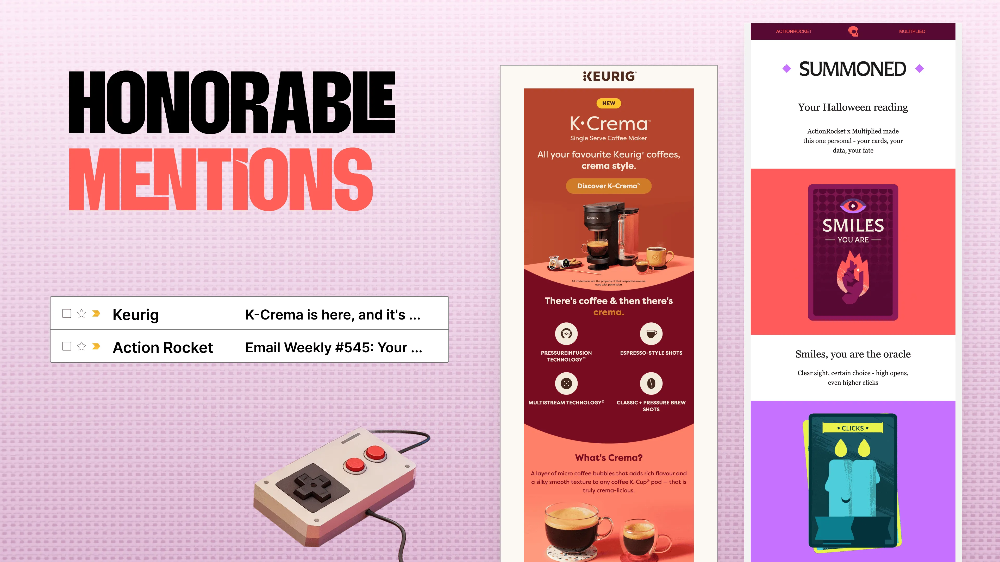
Keurig: “All your favorite Keurig coffee is crema style.” There’s coffee, and there’s crema. What’s crema, just in case you’re left out of the whole crema phenomenon? And then we’ve got Action Rocket saying, “You’ve been summoned.” Again, with the tarot card trends, or the card deck trends. It makes me want to click. It makes me want to find out what my horoscope is. I’m “The Oracle,” apparently. Matt slash five.
Matt Helbig: Action Rocket would win this category every year, because they’re always experimenting with email, with their newsletter, and across the email work they do for clients. I also wanted to showcase this one because it includes some GIFs from Multiplied, which is another agency here. They include personalized GIFs that not only pull in your first name, but also some metrics about you. We might be seeing this as a new trend, where personalized GIFs add value in the inbox and help make it feel more one-to-one.
Lianna Patch: Yeah. What did you like about the Keurig email? Because I know there’s backend stuff happening that I’m probably missing.
Matt Helbig: Yeah, there’s some logistics here. I think it's based on your usage, such as the number of emails you open throughout the year, or something similar. I think there are personas built into it, but I don’t know the full story. I just really enjoyed this email. All right. And we’ll look at the most creative, which is a nod to Action Rocket, as they created these emails.
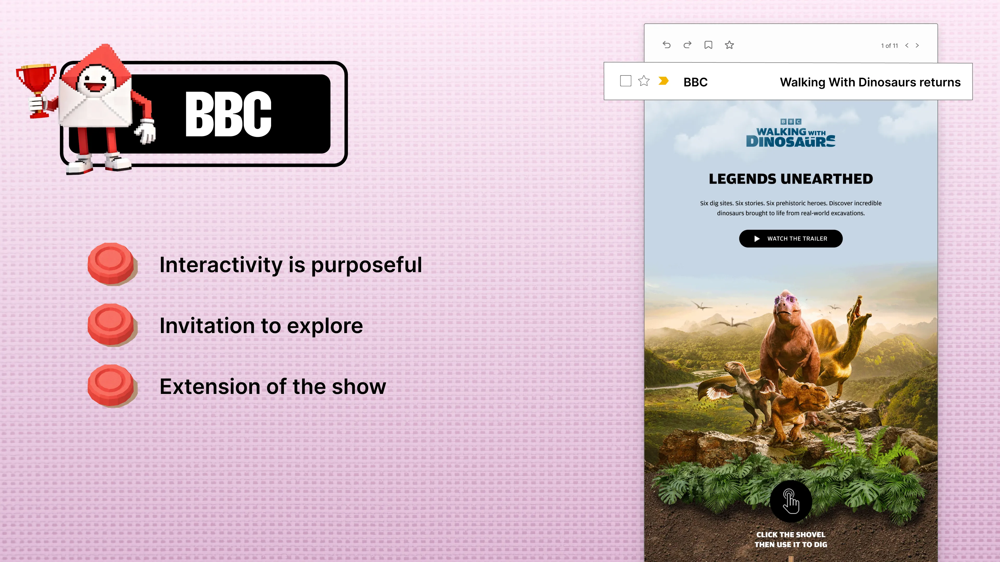
Lianna Patch: Right. Yeah. Walking With Dinosaurs. The simplicity and visual impact of this email invite you to watch the trailer. They made the whole email feel cinematic already, which is a very difficult feat to accomplish. They’ve got that archaeological fossil-footprints vibe. And they’re doing that quiz approach we saw, I think, in Charity: Water, where it’s like, “Hey, do you know this?” And then once you get there, they whisk you away to the landing page.
Matt Helbig: Yeah. Across many emails, people just promote things. But with these, it feels like an extension of what they’re promoting. It’s not just an ad for a show. It’s an extension of that universe. To do that with email feels really cool.
Lianna Patch: Yeah, we’ve seen that in a few of the quotes from email designers and creators throughout, like, how do we make this feel like more than an email? Speaking of quotes, Ben Hammond says: “The best emails push the boundaries of innovation while sparking real delight, interactivity, personalization,” which we all know is not just putting someone’s first name in there with a merge tag, “and a sense of fun. Help create moments that encourage fans to engage and feel more connected to the brand.”
Matt Helbig: Great. Well, that’s it for the awards. We’re looking forward to 2026. And I just want to say congrats to all the winners. This was really fun, featuring all your emails. Everyone did a fantastic job. Everyone’s really a winner in my book. And again, thank you. Really Good Emails wouldn’t be around if people weren’t submitting their emails and creating fantastic work. And now, our big announcement for this year.
Justine Jordan: Unspam is coming at you. For all of you who have been asking for a West Coast Unspam, we are making your dreams come true. April 2026 in Long Beach, California. Tickets are on sale right now. And you know what? Tomorrow is my birthday, and the best birthday present you could ever give me is selling out those early bird tickets tomorrow. Can you do it? Are you up for the challenge? You can see smiles there, hanging at the old Hyatt Regency. We’re just steps away from the beach. We’ve got to give the people what they want, and that was Unspam in Long Beach on the West Coast. If you don’t know what Unspam is, and you like this webinar, Really Good Emails, or the work we do, this is essentially two days of summer camp for email nerds. It’s a cool experience. People cry. In fact, you can see Mike cry on stage almost guaranteed every year. It’s a fantastic experience. You get to hang out, you get to learn a lot, and we’ve got a really good deal on those early bird tickets. So again, make my birthday totally awesome, and please go buy one.
Matt Helbig: Yeah. Unspam, to me, both of our guests here are speakers at Unspam. It’s a community like nothing else. It’s not another email conference. It’s totally different. You’ll definitely meet people who become lifetime friends.
Some really good questions
Matt Helbig: All right. We’ve got some time to chat if everyone wants to stick around. I know there are still people here, but we’ll try to answer some of your Q&A questions. I’m going to look at the most upvoted questions.
There was one person discussing the pressure internally to move toward image-based emails, citing that AI readers have improved, making image-based emails just as accessible.
Justine Jordan: I thought that was an interesting anecdote. And the answer, with which I agree, is that AI can be great. I love that it helps us be more efficient. It can even make emails more accessible at times. However, I’ll return to this: AI is a blend of hype and reality. Some people adopt quickly, while others are never going to adopt. Accessibility is about making your email and message accessible to everyone. Even for people who choose not to, or will not ever, use AI, I still think accessibility is a very important element. There are several reasons why live text can be better. I might be on a slow Wi-Fi connection. I might have accessibility concerns. It’s also easier to modify an email into a landing page or reuse it for other purposes. Is there anything else either of you would like to add, or Matt?
Matt Helbig: No. To your point, live text is still the best option. There’s more flexibility, as we saw with some of those Lush emails. Being able to translate an email would be difficult if it were all locked into an image, because you’d have to create multiple versions. Live text has that flexibility. It’s easier to read. Yes, there may be advances with AI, but I still think live text is the direction we’re pushing forward. You wouldn’t want to experience the web as all images, so why would you want email that way?
Another discussion-worthy topic that arises in almost every webinar and talk we conduct is the distinction between the Primary tab and Promotions in Gmail.
Justine Jordan: I have very strong opinions about this. For some reason, there’s a perception that the Promotions tab is purgatory, or negative, or equivalent to spam. The way I prefer to look at it is a reframe. If you truly want to honor the user’s preference and deliver emails where they want them, more often than not, that’s the tab they prefer, which is likely the Promotions tab. The Primary tab is where true one-to-one emails should be stored. More often than not, I’m a Gmail tabs user, and if a promotional email somehow sneaks into my Primary tab, I’m kind of upset, because I want to set aside time to look at my Promotions tab when I’m ready. So I wouldn’t recommend trying to circumvent Gmail’s automatic placement. That typically doesn’t work out well. Embrace the Promotions tab. I’m not sure if anyone else has an opinion on that.
Meghan Sokolnicki: I completely agree. It’s like: meet your recipient where they are. Respect boundaries. It’s kind of the same with dark mode, too. Let’s not think about how we can force it to be what we want. Instead, let’s learn how to adapt our designs, campaigns, copy, and other elements to the user’s preferred experience.
Lianna Patch: Yeah. Also, the bar for standing out in the Promotions tab is so much lower than if you’re competing with their actual life and work emails.
Justine Jordan: Totally. And at the end of the day, I always make the point that Gmail’s core user is the inbox owner, not the marketer, right? When they develop these features, it’s because their core users have asked for them.
I notice that your favorite testimonial emails don’t include customer pictures. Do you prefer these emails with or without pictures?
Lianna Patch: I always prefer pictures. I’ll just jump in and say it builds more trust to have pictures. But it’s much harder to get them from people. That’s where a great review can just die on the vine, because you ask, “Hey, is there a headshot we can use?” and somebody just disappears. Now we have truly realistic AI-generated headshots, so pictures may not serve the same purpose of proving someone is real as they once did.
Justine Jordan: I was just going to say, I think that’s an interesting authenticity play. Because there are even free headshot websites available, you can simply create one. I’m not advocating for using them, but to your point, authenticity is harder to prove these days. So I feel like it’s probably the copywriting, and when I say copywriting, I mean the authenticity of the testimonial itself and what it’s saying, versus whether or not there’s a picture.
Lianna Patch: Yeah. It also occurs to me that you can sidestep the permission aspect if you’re using a review collection tool that allows picture uploads. Typically, the terms stipulate that we can use this in our marketing. So if someone uploads a photo, like, “Here’s me holding my new baby stroller,” which fits in my hands because my baby’s really small, then they’ve uploaded that and given you permission to use it.
Matt Helbig: Our Shift email winner actually includes it; it was somewhat cropped in the screenshot, but it does feature actual customer review photos within the email, which is interesting to see, and we don’t often see that. So I think it’s kind of like a level of UGC. If you have good-quality content to include in your email, it’s worth it. But if someone’s uploading really bad, blurry images, it’s probably not worth showing.
Meghan Sokolnicki: I never underestimate using a different kind of graphic, too. Like in the Milk Bar example, they had their own product photography with the stars. So, even something as simple as that, if you don’t have approval for a headshot or a relevant image the person uploaded, you can draw extra attention with typography, a star feature, or a bar. There are other creative ways to handle it.
Someone asked: long form versus short form, with the intention of having a high CTR. The eternal question. One of the favorites, right?
Lianna Patch: I think long form versus short form for click-throughs doesn’t matter as long as you have a CTA toward the top. As long as we don’t have to wait and scroll below the fold for the first CTA, it shouldn’t really affect click-throughs. It’s the same way I build landing pages. What information does the person need to know to make a decision when they’re at that inflection point? Let’s serve up a CTA. If they need more information, we’ll provide it throughout the page and offer CTAs whenever they might be ready to click through.
Justine Jordan: I was just going to say, one of my favorite examples is when I’m trying to remember the brand name, but they put a CTA right in the header. I think it was one of the emails we featured in the “Bright and Bold CTAs” trends, because it immediately stood out to me. How often do people place a CTA, such as a rounded button or a large button, right at the top of the email? It was that cat food brand. What is it? Smalls, yes, that was it. If you’re on Really Good Emails, go look up Smalls. It’s a great example of what you were just describing. You can definitely use long form with smart CTAs integrated.
Lianna Patch: Use the specific format of email to your advantage. I send a lot of text-based emails with an italicized background information section at the top, and a P.S. Most of the time, I’m using those CTAs for TL; DRs, like, “Here’s what this email contains. If you want more information, click through right now.” Everybody reads that, and everybody reads the PS.
Matt Helbig: For me, pixels are free. It’s free to include as much text in an email as you want. Many of the emails we see on Really Good Emails tend to be quite lengthy. I think the constraint is: is this actually useful for me to tell this person at this exact point in time? So, I tend to lean more toward shorter and more focused content, making it super clear with that CTA what action you want them to take next.
Justine Jordan: Well, for the almost 400 of you who have been sticking around for an extra 20 minutes while we do Q&A, if you like this kind of thing, we’ve been holding a monthly series we’re calling Email Support Group, which is exactly this. You can ask anything. We have a rotating group of internal and external experts who occasionally attend to answer all the questions. We’ll offer email support, call it group therapy if that’s what you’re after. If you'd like more of this, we’re hosting them monthly. I think there’s a link in the chat too, so you can check that out.
Matt Helbig: All right. Thank you all for coming to the Really Good Emails Awards this year. I had a blast. Thank you to our guest judges for joining as well. You provided amazing insights.